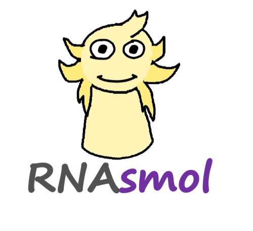
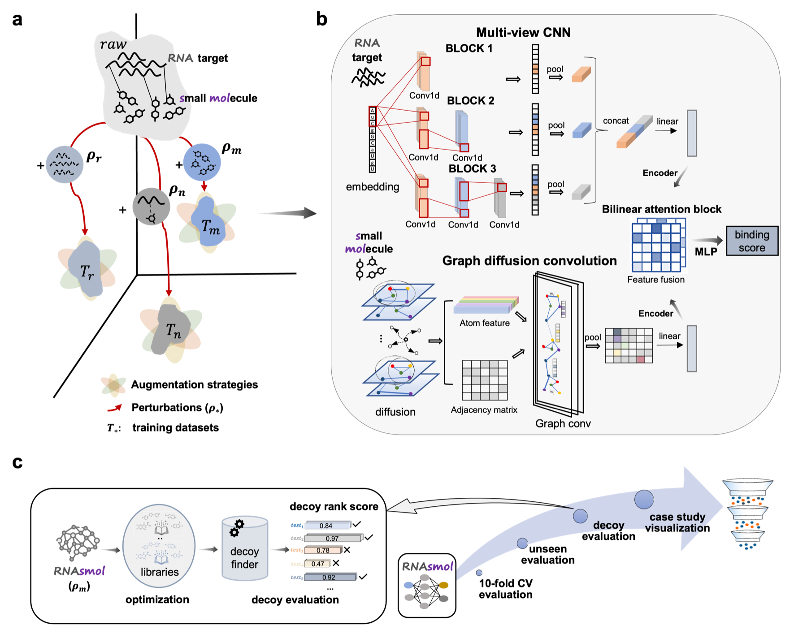
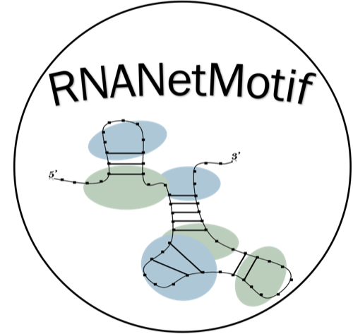
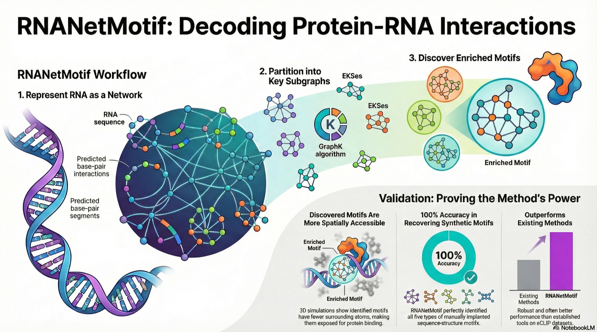
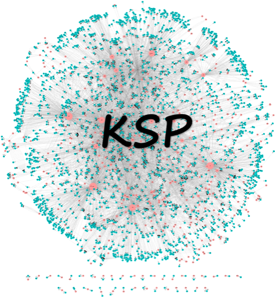
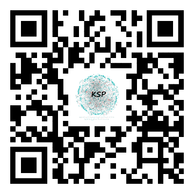
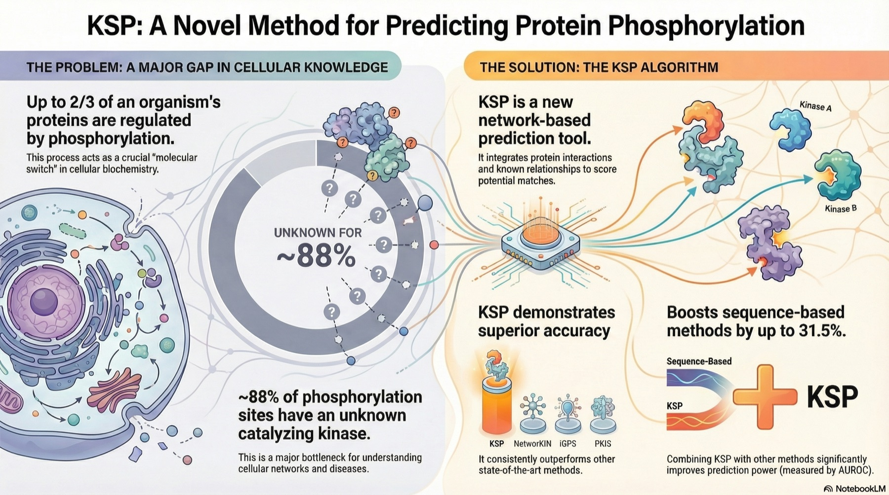
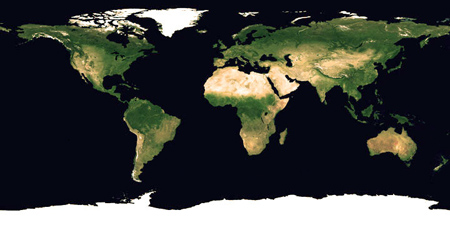

RNAsmol
RNA-ligand interaction scoring via data perturbation and augmentation modeling.

I am interested in computational modeling of biomolecules, with a particular focus on RNA structure, RNA-related interactions, and interpretable machine learning.

RNA-ligand interaction scoring via data perturbation and augmentation modeling.


A network-based method for discovering enriched RNA sequence-structure motifs.


An integrated network method for predicting catalyzing kinases of protein phosphorylation sites.


† Equal contribution; * Corresponding author
2025
RNA-ligand interaction scoring via data perturbation and augmentation modeling
Nature Computational Science, 2025 / Full text Code
News & Views highlight: What’s so hard about RNA-targeting drug discovery? by Carlos Oliver and Jérôme Waldispühl, Nature Computational Science, 2025.
Peak analysis of cell-free RNA finds recurrently protected narrow regions with clinical potential
Genome Biology, 2025 / Full text
Discovery of RNA-Targeting Small Molecules: Challenges and Future Directions
MedComm, 2025 / Full text
2024
Pathformer: a biological pathway informed transformer for disease diagnosis and prognosis using multi-omics data
Bioinformatics, 2024 / Full text
2023
Conserved 3' Stem-Loop Structures Enable Comprehensive Analysis of Bacterial Transcription Termination in Metagenomes
Preprint bioRxiv, 2023 / Full text
2022
RNANetMotif: Identifying sequence-structure RNA network motifs in RNA-protein binding sites
HCRNet: high-throughput circRNA-binding event identification from CLIP-seq data using deep temporal convolutional network
Briefings in Bioinformatics, 2022 / Full text
Predicting Ligand-RNA Binding Using E3-Equivariant Network and Pretraining
NeurIPS Machine Learning in Structural Biology Workshop, 2022 / Poster
2020
KSP: an integrated method for predicting catalyzing kinases of phosphorylation sites in proteins

Approximate locations of recent visitors.
{kind=link}